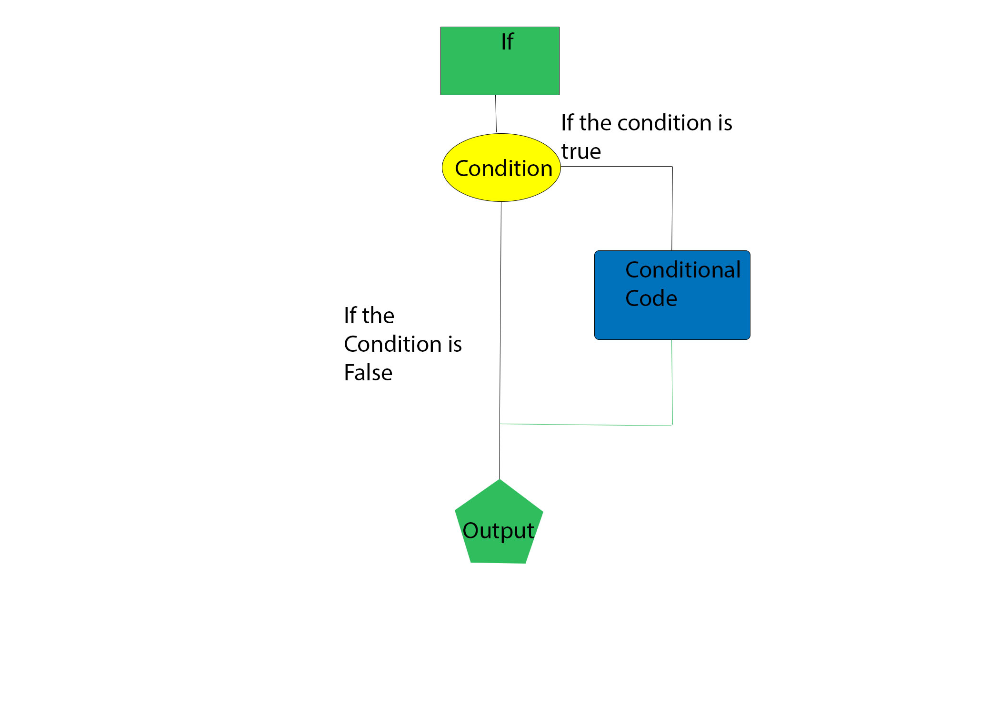

Conditional statements are a lot like decision making in real life. In programming, we also face some situations where we want a certain block of code to be executed when some condition is fulfilled. These control statements are used to control the flow of execution of program based on certain conditions. These are used to cause the flow of execution to advance and branch based on changes to the state of a program. |
If Statments |
The if statement is the most simplistic decision making statements. It is used to decide whether a certain statement or block of statements will be executed or not. If a certain condition is true then a block of statement is executed otherwise the block of code is not executed. |
|  |
If-Else Statements |
The if statement alone tells us that if a condition is true it will execute a block of statements and if the condition is false it won’t. But what if we want to do something else if the condition is false. Here comes the else statement. We can use the else statement with if statement to execute a block of code when the condition is false |
Switch Statements |
The switch statement is a multiway branch statement. It provides an easy way to execution different blockss of code based on the value of the expression. |